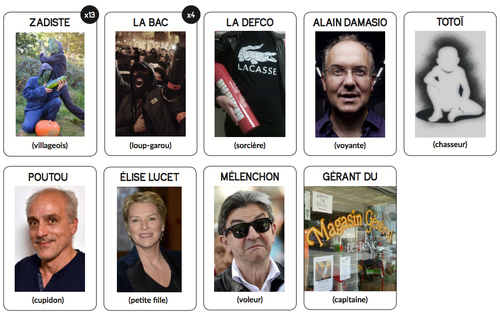

2017 n'aura pas lieu
Un détournement des Loups Garous de Thiercelieux
Par Convergences & Détournements
Un détournement des Loups Garous de Thiercelieux
Par Convergences & Détournements
Sous quelque angle qu’on le prenne, la situation est sans issue. Julien Coupat a de nouveau été arrêté, et un climat de tension règne sur la ZAD : Des bacqueux rôdent. Chaque nuit ils arrêtent quelqu'un afin de nourrir la machinerie répressive. D'ardents révolutionnaires vont devoir les démasquer, sous peine de se voir tous emprisonner. Chantres de l'auto-organisation, ils se réunissent au petit matin en assemblée générale, afin de lyncher l'un des leurs suivant un procédé pseudo-démocratique. C'est ainsi qu'ils espèrent enfin "niquer la BAC".
Chaque nuit, l’un d’entre eux est tabassé par les membres de la BAC avant d'être envoyé en cellule. Ce joueur est éliminé du jeu, et ne peut plus participer aux débats. Les zadistes survivants doivent chaque jour lyncher un des joueur, dans l’espoir qu’il soit de la BAC.
Chiens de l'Empire et du Spectacle, ils se réveillent chaque nuit et choisissent ensemble un révolutionnaire qui sera victime de la répression. Le jour ils se font passer pour des zadistes afin de ne pas être démasqués.
Grâce à son implication sur le terrain et ses reportages de fond, la journaliste a su gagner le respect des militants nantais. Elle dispose ainsi de l'accès à l'ensemble des recoins de la ZAD. Elle y observe avec attention tout fait susceptible de constituer une nouvelle de qualité.
Au cours de son arrestation, Totoï peut dans son infinie sagesse choisir un joueur sur lequel il jette un cocktail molotov, qui meurt. Tant pis si c'est un camarade, car c'est avant tout une question de libre jeu de sa forme de vie et de réactivité de sa subjectivité en tant que telle.
La première nuit, il désigne 2 joueurs qui seront follement Amoureux l’un de l’autre. Si l’un d’eux meurt, l’autre meurt de chagrin immédiatement. Un bacqueu et un zadiste peuvent être Amoureux l'un de l'autre. Ils jouent alors contre tous les autres, bacqueux et zadistes. Si les amoureux survivent, alors ce sont eux qui gagnent. Philippe peut se désigner lui-même comme un des 2 Amoureux.
La défense collective accourt dès les premiers indices indiquants une incarcération. Une fois dans la partie elle peut faire sortir de garde-à-vue le joueur incarcéré précédemment en lui faisant parvenir ses garanties de représentation. De plus, la défense collective s'entraine assidûment à l'aïkido et au MMA : une fois dans la partie elle peut déclencher une opération d'autodéfense populaire pour éliminer un joueur. La defco peut utiliser ces deux pouvoirs dans la même nuit. Elle peut aussi les utiliser à son profit, et donc se libérer elle-même.
Mélenchon tente désespérément de se faire passer pour un ennemi de l'ordre établi. Il a le droit durant la première nuit d’échanger sa carte contre une des cartes supplémentaires (face cachée) qu’il reste après distribution du jeu. Il jouera désormais ce personnage.
Auteur d'anticipation, à chaque tour, Alain peut user de ses pouvoirs de divination pour connaître la “vrai personnalité” d’un joueur de son choix, il doit aider les zadistes sans être démasquée par la BAC.
Cette carte est confiée à l'un des joueurs, en plus de sa carte personnage. Il est choisi le premier jour au cours d'un processus de désignation pseudo-démocratique. Comme c'est dans l'épicerie qu'on organise les AG il a informellement plus de pouvoir dans les discussions.
Notre objectif est d'accompagner toutes et tous dans leurs premiers pas vers les luttes sociales. Entre autres activités, nous réalisons aussi une revue de presse hebdomadaire, à mi-chemin entre un outil d'éducation populaire et un pastiche de la revue Le Voleur.